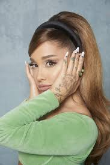
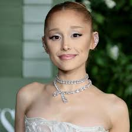
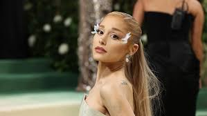
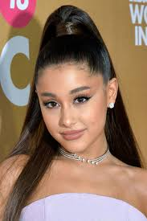

Ariana Grande
Biography
Ariana Grande was born on June 26th, 1993, and is an American singer, songwriter, and actress known for her powerful four-octave vocal range and chart-topping pop and R&B hits. She began her career on Broadway and gained widespread recognition playing Cat Valentine on the Nickelodeon shows Victorious and Sam & Cat.
Grande launched her music career in 2013 with her debut album Yours Truly, which debuted at No. 1 on the Billboard 200. She quickly became one of the most successful pop artists of her generation with albums and hit songs. She has earned numerous awards, including Grammy Awards, and holds multiple streaming and chart records.
Beyond music, Grande is recognised for her advocacy work and her influence on modern pop culture. She continues to be one of the world's most successful and influential entertainers.
Top Songs
7 Rings – 2019
thank u, next – 2019
One Last Time – 2014
Into You – 2016
Side to Side – 2016
Albums
Yours Truly – 2013
My Everything – 2014
Dangerous Woman – 2016
Sweetener – 2018
thank u, next – 2019
Positions – 2020
Eternal Sunshine – 2024
Achievements
Successful actress known for roles in Victorious, Sam & Cat, and films like Wicked.
First artist to hold the top three spots on the Billboard Hot 100 simultaneously since The Beatles.
Multiple Grammy Awards.
Has won several MTV Video Music Awards.
Holds many Guinness World Records, including being one of the most-streamed female artists.